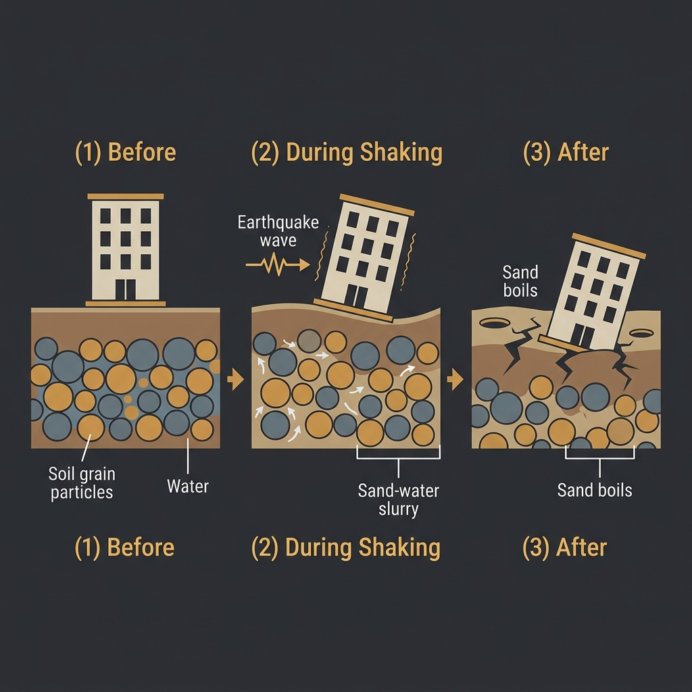

1. Liquefaction: When Solid Ground Becomes Fluid
The term liquefaction sounds like a laboratory process. The reality is deeply unsettling. Under rapid earthquake shaking, saturated, loosely packed sediment can temporarily lose all its load-bearing strength and behave like a viscous liquid — a phenomenon that fundamentally inverts the ordinary relationship between weight and support.
The mechanism is hydraulic. In normal sediment, individual grains are in contact with each other, and the load from above is transferred grain-to-grain through the fabric of the material. Water fills the spaces between the grains, but the grains themselves carry the load. Under sustained, rapid shaking, the vibration forces the grains apart. The water in the pore spaces, unable to drain quickly enough, bears the full overburden load in its place. This dramatically increases water pressure between grains. If the pressure becomes high enough, the grain-to-grain contact that provides strength is lost entirely — and the sediment behaves as a liquid.
The consequences are visible and dramatic. Buildings and structures founded on shallow footings in liquefied material can sink, tilt, or overturn. Underground infrastructure — sewage pipes, storm drains, fuel tanks — can float upward through the liquefied medium, as they are less dense than the surrounding slurry. The ground surface ejects sand boils — circular vents through which pressurised water and fine sediment erupts to the surface creating a surreal landscape of settling craters.
Liquefaction susceptibility is strongly correlated with sediment type and groundwater depth. Fine-grained, loosely deposited sands with shallow groundwater are highly susceptible. Dense gravels, bedrock, and unsaturated soils are not. This creates spatial patterns of damage that can appear almost arbitrary to observers not familiar with the subsurface geology — buildings on one side of a street may survive intact while those on the other side sink a metre into the ground.

Nowhere in recent history has liquefaction been more thoroughly and destructively documented than in Christchurch, New Zealand. During the 2010–2011 Canterbury earthquake sequence, the low-lying eastern suburbs of Christchurch — built on Holocene alluvial deposits within the Avon River floodplain — experienced repeated, devastating liquefaction events. An estimated four million tonnes of silt and sand were ejected to the surface during the February 2011 event alone. The damage to underground pipes, foundations, and roading was so extensive that approximately 8,000 residential properties in the eastern suburbs were eventually abandoned and the land decommissioned by the government — a residential area of Christchurch that simply ceased to exist.
2. Tsunamis: The Ocean as a Second Hazard
A tsunami is not a synonym for a large wave. It is a train of waves — a series of compressions in the ocean water column, generated when the seafloor is suddenly and dramatically displaced, usually by a megathrust earthquake on a submarine fault. The distinction matters because each wave in the train can be as or more destructive than the first, arriving over a period of hours, generating cyclical inundation events.
In the open ocean, a tsunami is nearly invisible. The wave train may have a period (time between successive crests) of 10 to 60 minutes and a wavelength of hundreds of kilometres, but a wave height of less than a metre. A ship on the ocean surface would not detect it. The danger materialises only as the wave train approaches the coastline. As the seafloor shoals, the wave undergoes wave shoaling — it compresses in wavelength and dramatically increases in height, focusing its energy in the constricted near-shore environment. A one-metre open-ocean wave can become a 40-metre wall of water where it meets a narrowing bay or river mouth.
The 2004 Indian Ocean tsunami — generated by the Mw 9.1–9.3 Sumatra–Andaman earthquake — killed approximately 227,898 people across 14 countries. Indonesia, where ground motion preceded the wave by only minutes, bore the heaviest toll: more than 170,000 lives lost in the province of Aceh alone. One of the most widely reported observations after the event was the natural warning sign that many survivors recalled seeing and correctly interpreting: the dramatic, anomalous recession of the sea from the beach before the arrival of the first wave. This recession is the preceding trough of the wave train — and its recognition is one of the most actionable natural early warning signals available.
The ocean receding dramatically from the shore is not a curiosity. It is the trough of an incoming wave train — and it is among the most reliable natural warning signs of an imminent tsunami.
3. Landslides, Rockfalls, and Slope Failure
Ground acceleration during an earthquake can destabilise slopes that have been stable for centuries, even millennia. Seismic shaking imposes rapid horizontal forces on hillside material — forces that can overcome the friction and cohesion that hold slopes intact. The results range from rockfalls dislodging individual boulders onto roads, to catastrophic debris flows encompassing millions of tonnes of rock and soil.
The 1970 Ancash earthquake in Peru (Mw 7.9) triggered a massive ice-and-rock avalanche from the north face of Nevado Huascarán, South America's highest tropical peak. Approximately 80 million cubic metres of material descended on the town of Yungay at speeds estimated at 280–335 km/h, burying the entire community beneath metres of debris within approximately four minutes. The earthquake death toll was estimated at 66,794. The Huascarán avalanche accounted for at least 18,000 of those deaths.
In Australia, the risk of seismically triggered landslides is concentrated in the ranges of the east and southeast, where steep terrain, weathered bedrock, and periodically saturated soils create slope instability conditions. The risk is lower than in tectonically active mountain ranges — Australian mountains are geologically ancient and highly erosion-sculpted — but it is not zero, and the interaction with rainfall patterns (a pre-wetted slope is significantly less stable than a dry one) means that seasonal conditions influence landslide risk in a seismic context.
4. Aftershocks: The Hazard That Outlasts the Event
An earthquake does not end when the primary fault rupture ceases. It ends — statistically — months or years later, as the pattern of stress redistribution along the fault system gradually resolves. The smaller earthquakes that follow the mainshock, occurring on the same or adjacent fault segments as the crust adjusts to its new stress state, are called aftershocks.
Omori's Law, formulated by the Japanese seismologist Fusakichi Omori in 1894, describes the decay of aftershock frequency: the number of aftershocks per unit time decreases roughly inversely with time since the mainshock. Aftershocks are most frequent immediately after the mainshock, then gradually taper over weeks, months, or in some sequences, years.
The practical danger of aftershocks is twofold. First, they can directly cause deaths and injuries — particularly in structures already weakened by the mainshock. In the Canterbury sequence, the January 2011 Mw 7.1 mainshock was followed by approximately 4,000 aftershocks greater than Mw 2.0 before the February 2011 Mw 6.3 event that killed 185 people. Technically a large aftershock of the September 2010 event, the February earthquake was independently catastrophic because it struck at a different depth, a different location, during work and school hours, and into a building stock already structurally compromised.
Second, aftershocks create profound uncertainty for emergency response, building assessment, and community re-entry. The question of when it is safe to re-enter a damaged building — knowing that further shaking is likely but unpredictable — is one of the most operationally difficult challenges in post-earthquake disaster management.
5. Fire, Infrastructure Failure, and Cascade Effects
Large earthquakes do not simply shake things down — they can trigger cascade failures across interconnected infrastructure systems that amplify the initial damage by orders of magnitude.
Fire following earthquake is one of the oldest documented secondary hazards — and consistently one of the most lethal. The 1906 San Francisco earthquake was followed by a fire that raged for three days, destroying 490 city blocks and accounting for the majority of the event's 3,000 estimated deaths. Gas mains were ruptured by ground movement; water mains were similarly broken, leaving fire services without the means to fight the blazes that subsequently ignited from toppled stoves and open hearths. Modern seismic building codes require gas shut-off valves and resilient water infrastructure precisely because of this documented cascade.
Infrastructure interdependency also means that the failure of one system can cascade rapidly into others. Hospitals depend on electricity to run life-support equipment; electricity transmission depends on physical infrastructure susceptible to ground movement; communication networks depend on both. The 2011 Tōhoku earthquake and tsunami in Japan caused damage to eleven of the country's nuclear power stations and the catastrophic meltdown at three of the Fukushima Daiichi reactors — a consequence that had long-term consequences for Japan's energy policy and required the largest peacetime evacuation in the country's modern history.
References
- Youd, T. L., & Idriss, I. M. (2001). Liquefaction resistance of soils: summary report from the 1996 NCEER and 1998 NCEER/NSF workshops. Journal of Geotechnical and Geoenvironmental Engineering, 127(4), 297–313.
- Sutherland, L. M., et al. (2014). Technical investigations of the 2010–2011 Canterbury earthquake sequence. Canterbury Earthquakes Royal Commission, Government of New Zealand.
- Synolakis, C. E., & Kong, L. (2006). Runup measurements of the December 2004 Indian Ocean tsunami. Earthquake Spectra, 22(S3), 67–91.
- GNS Science. (2012). Ground deformation, ground failure and slope instability in the Canterbury earthquake sequence. Lower Hutt, New Zealand.
- Omori, F. (1894). On the aftershocks of earthquakes. Journal of the College of Science, Imperial University of Tokyo, 7, 111–200.